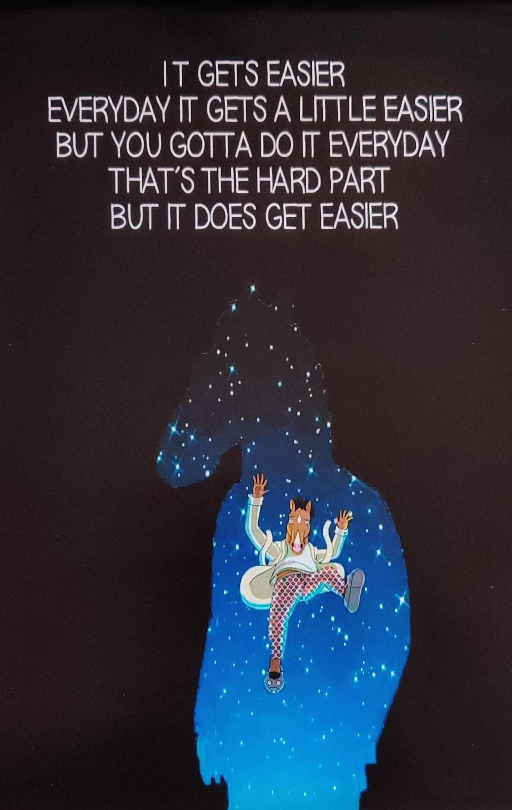
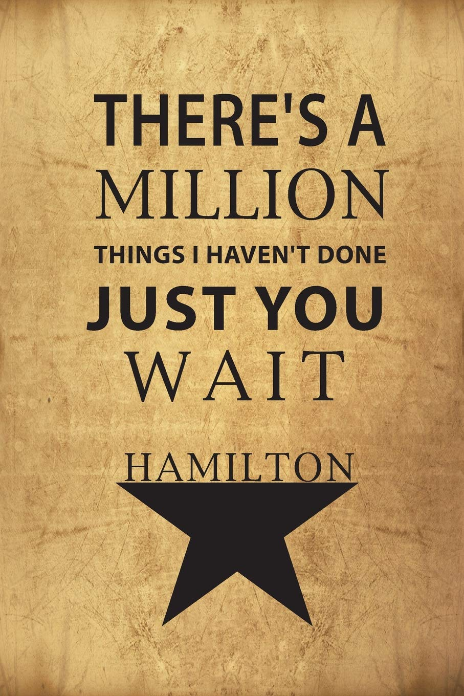

Ticia's Awesome Blog
Hi I'm an aspiring web developer, artist and former chemist from Louisville, Kentucky. Here is where I'll be posting updates on how I'm doing in the Awesome Inc bootcamp
Part 1: Web Development 101
8/23/2021 - 8/27/2021
Was the first week of bootcamp what I expected? Somehow the answer is both yes and no. Yes in that I knew I'd be facing challenges and blockers since this is so new to me and I definitely have had some struggles getting things to work how I wanted. But no in that I thought we'd jump right into programming languages, I didn't even think about the stuff you'd need to know beforehand! Though to be fair, I didn't really know anything about the CLI and how to naivgate that with its various commands or about Github and its usefulness in collaborations but now I do and understand why we'd need a good grasp of these concepts before diving into any language.
I'm definitely excited to get into programming languages now to get some powerful tools in my belt. That way I can start designing my blog to look as cool as I'm picturing in my head! It's so interesting to browse through portfolio examples from past students or even just on Google seeing different professionals and their websites and knowing I'm just a few months of being capable of emulating that is such an exciting feeling. I have a little experience with the Adobe Creative Suite and Figma and I'm really excited to learn how to integrate that with my new programming capabilities.
I'd like my blog to showcase my education and career journey as well as projects that may personally interest me. Maybe even add links to articles and videos I've found helpful. The amount of things I'm learning everyday is overwhelming to say the least, but if I can show how I was able to overcome each obstacle maybe I could help someone else down the line. It's so amazing to see the awesome things my mentors' and peers' are able to put out everyday and they inspire me to be more awesome too!
One of my favorite shows has a very simple quote that says:
Part 2: HTML and CSS headaches
8/30/2021 - 9/3/2021
Seeing all the possibilities of what I could potentially make and then trying to make that now with my limited toolset is pretty sobering. So maybe it's a bit forward and impatient of me to say I'd like to do everything but that's definitely not far from the truth. Some of the more specific things I'd most like to do are make my webpage more interactive. For instance, just making a menu button that opens up with options or making a picture pop out when you hover over it.
Me and CSS right now have a love hate relationship going on. After learning HTML and getting somewhat confident with that, CSS has been a headache in comparison. I can see the potential in CSS but I feel like my limited toolset is keeping me handcuffed from truly implementing its full potential. I've been doing some supplemental learning from YouTube tutorials on Website Building and they've been very informative and inspiring. It's just tough for me right now to bridge that gap between how they were able to implement those features in their work and how to implement those same features in my own.
When I encounter problems in my code, I tend to keep a level head. First, I look around for the common mistakes like missing semicolons, quotes, parentheses, etc. When I eliminate that, if it's an issue I've encountered before or I may have heard someone else encountered, I'll go to whatever techniques I used then or check our class group chat and follow through what they were told to do. If that all fails, then Google is my new best friend, and I try to describe the problem and see if it's been posted on StackOverflow or other forums where someone else potentially had the same problem. I usually have to take a break after looking this far and long into a problem, so I step away from the computer to give myself a mental break whenever it gets to be too much. Eventually with enough time, patience and research I'm able to figure out what I was missing so I try to avoid asking for help in the class group chat as much as I can so I can develop my research abilities. It'll be important for me to know how to solve these problems on my own but also know when to ask help if it's too far above my abilities.
I feel like I'm learning so much every single day and yet still feel like I've barely dipped my toe in a sea of coding knowledge. I guess that means I'm only inches from the dreaded Cliff of Confusion...
Mark me down as scared and excited! To quote my favorite musical:
